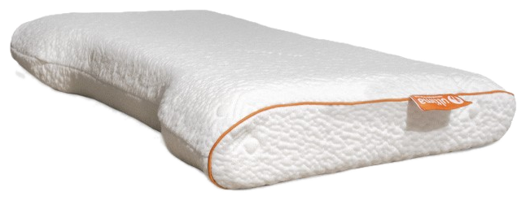
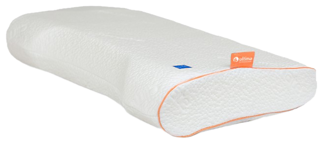
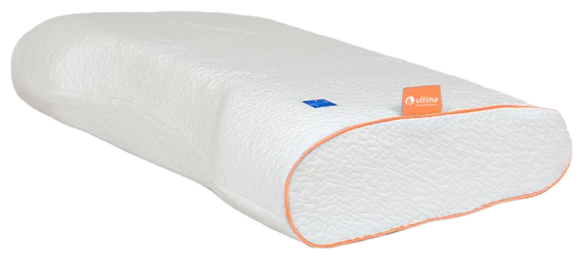
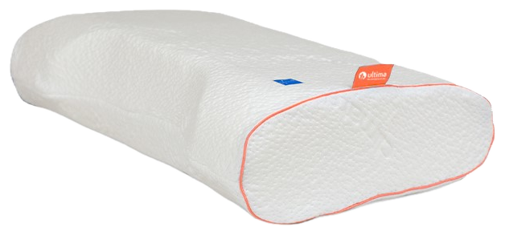

Kussens — AW
AW: één contourkussen, vijf uitvoeringen.
AW is er in vier hoogtes — AW8, AW10, AW12 en AW14, waarbij het getal de hoogte in centimeters aangeeft — en een aparte uitvoering voor buikslapers. Ontdek welke hoogte bij jouw slaaphouding en schouderbreedte past.
01 — AW8
8 cm hoogte, voor een platte, lage ligsensatie.
AW8 is de laagste uitvoering binnen de AW-lijn: een ergonomisch contourkussen in traagschuim met een hoogte van 8 cm. Geschikt voor wie een lager kussen prefereert, zoals rug- en buikslapers of mensen met smallere schouders.
- Traagschuim
- Hoogte 8 cm
- Ergonomisch contourmodel
- Afneembare, wasbare hoes
- Geschikt voor rug- en buikslapers
Goed om te weten: hoe lager het kussen, hoe minder de nek wordt opgetild tijdens het slapen — prettig voor wie plat wil liggen.

AW8
AW1002 — AW10
10 cm hoogte, de meest gekozen ondersteuning.
AW10 heeft een gemiddelde hoogte van 10 cm en is de meest gekozen uitvoering binnen de AW-lijn. Geschikt voor rug- en zijslapers met een gemiddelde schouderbreedte.
- Traagschuim
- Hoogte 10 cm
- Ergonomisch contourmodel
- Afneembare, wasbare hoes
- Geschikt voor rug- en zijslapers
Goed om te weten: twijfel je over de juiste hoogte? AW10 is een veilige middenkeuze binnen de lijn.
03 — AW12
12 cm hoogte, voor bredere schouders.
AW12 biedt met 12 cm hoogte extra opvulling en is geschikt voor zijslapers met bredere schouders, die meer ruimte tussen hoofd en matras nodig hebben.
- Traagschuim
- Hoogte 12 cm
- Ergonomisch contourmodel
- Afneembare, wasbare hoes
- Geschikt voor zijslapers met bredere schouders
Goed om te weten: een hoger kussen zoals AW12 houdt bij zijslapers de wervelkolom rechter tussen hoofd en matras.

AW12
AW1404 — AW14
14 cm hoogte, de meeste opvulling binnen de lijn.
AW14 is de hoogste uitvoering binnen de AW-lijn en biedt de meeste opvulling. Geschikt voor zijslapers met brede schouders, die de meeste ruimte tussen hoofd en matras nodig hebben.
- Traagschuim
- Hoogte 14 cm
- Ergonomisch contourmodel
- Afneembare, wasbare hoes
- Geschikt voor zijslapers met brede schouders
Goed om te weten: twijfel je tussen AW12 en AW14? Vraag je dealer naar een proefligging om het verschil in opvulling te voelen.
05 — AW Buikslaper
Specifiek ontwikkeld voor buikslapers.
AW Buikslaper heeft een lager, platter profiel dan de reguliere AW-hoogtes, zodat het hoofd tijdens het slapen op de buik niet te ver wordt opgetild en de nek in een neutrale positie blijft.
- Traagschuim
- Laag, plat profiel
- Specifiek ontwikkeld voor buikslapers
- Ergonomisch model
- Afneembare, wasbare hoes
Goed om te weten: buikslapen belast de nek sneller dan andere slaaphoudingen — een lager, platter kussen zoals deze uitvoering helpt de nek neutraal te houden.

AW BuikslaperCombineer je AW met de rest van de collectie
Bekijk ook onze andere kussenmodellen, boxsprings, matrassen, topmatrassen en gestoffeerde ledikanten.
Bekijk alle kussens